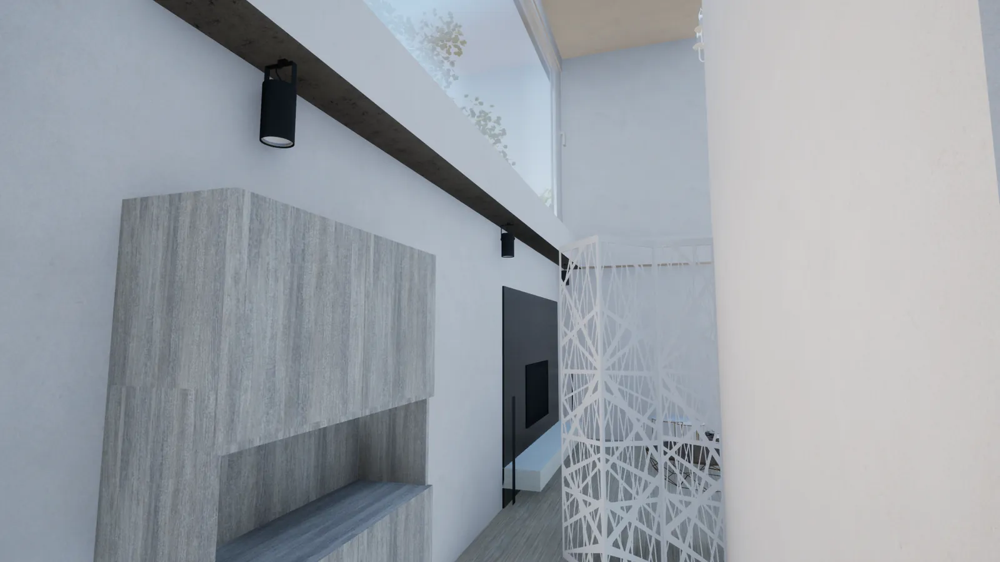
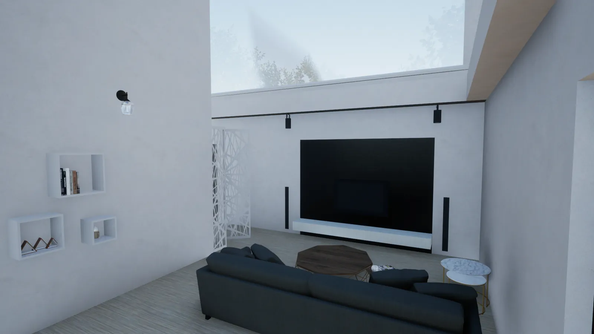
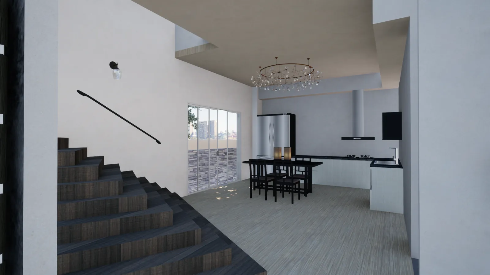
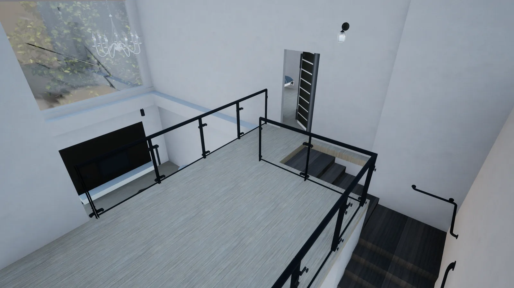
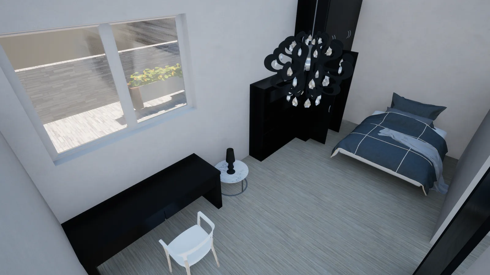
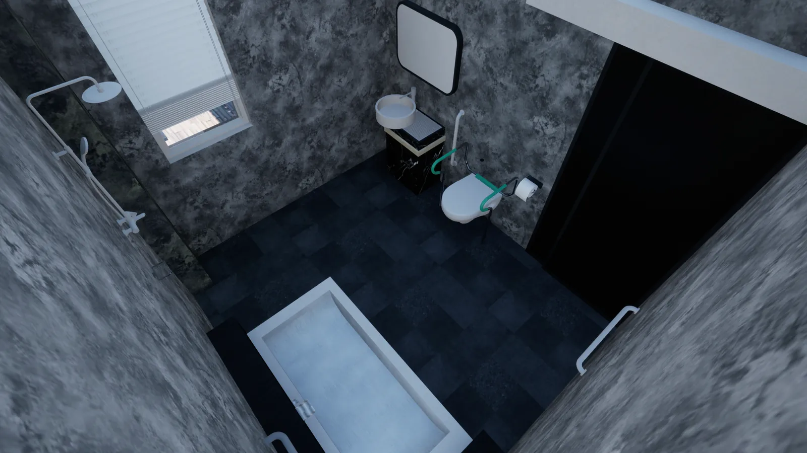
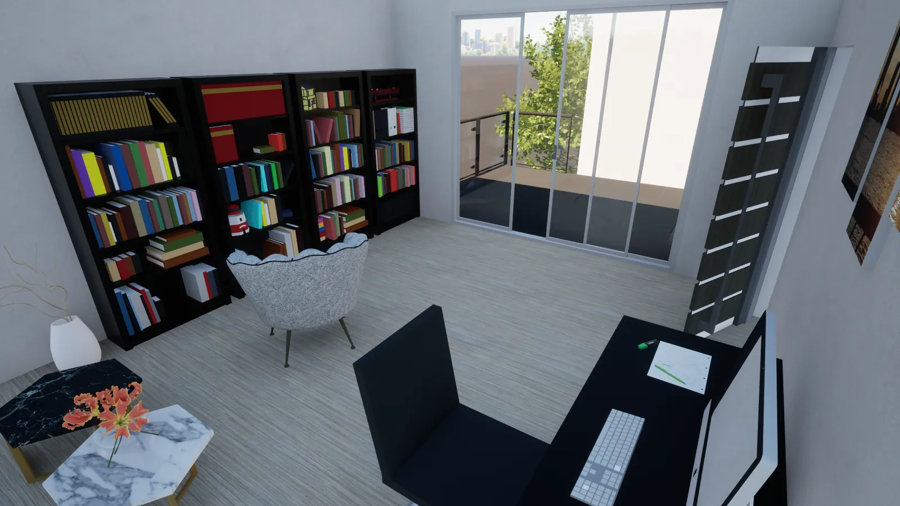

Spatial
Elderly Residence 長者住宅
A Tuscan-looking house with a double-height living room under a big pendant, and a garage that connects straight through to the living room and kitchen. The ground floor bedroom and bathroom are for a wheelchair user; upstairs belongs to the carer, with an office and a balcony for drying laundry. 參考托斯卡尼法透天的外觀,相似豪宅的風格搭配二樓大片窗設計, 客廳採用簍空,天花板裝設大吊燈照明,一樓車庫連通客廳及廚房,使空間流通順暢, 而一樓的臥室及浴室供身障者使用,樓梯採大角造型,二樓則為照顧者設計, 有辦公室供照顧者工作,以及陽台晾衣服。
- Type
- Spatial design — residential
- Drawings
- 1F & 2F plans, ceiling & lighting plans, two interior sections
01
Drawings 圖面
02
Rooms 空間






